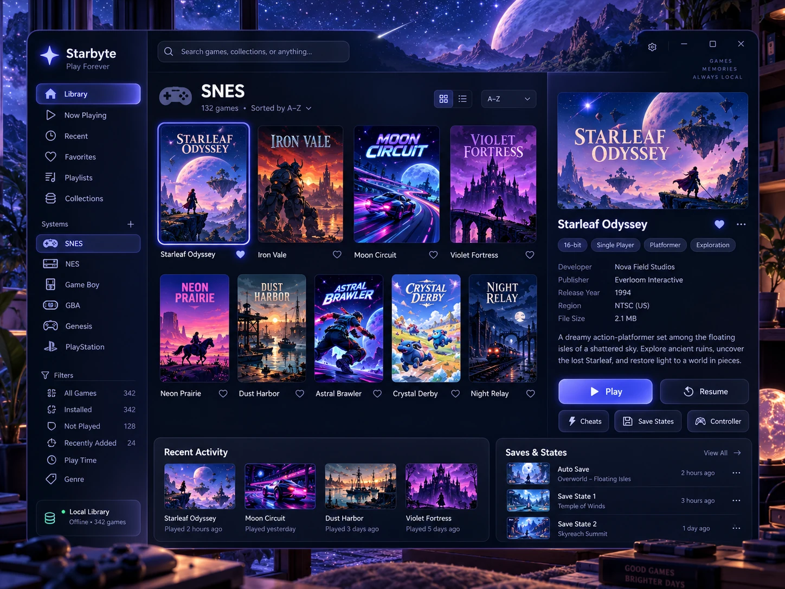
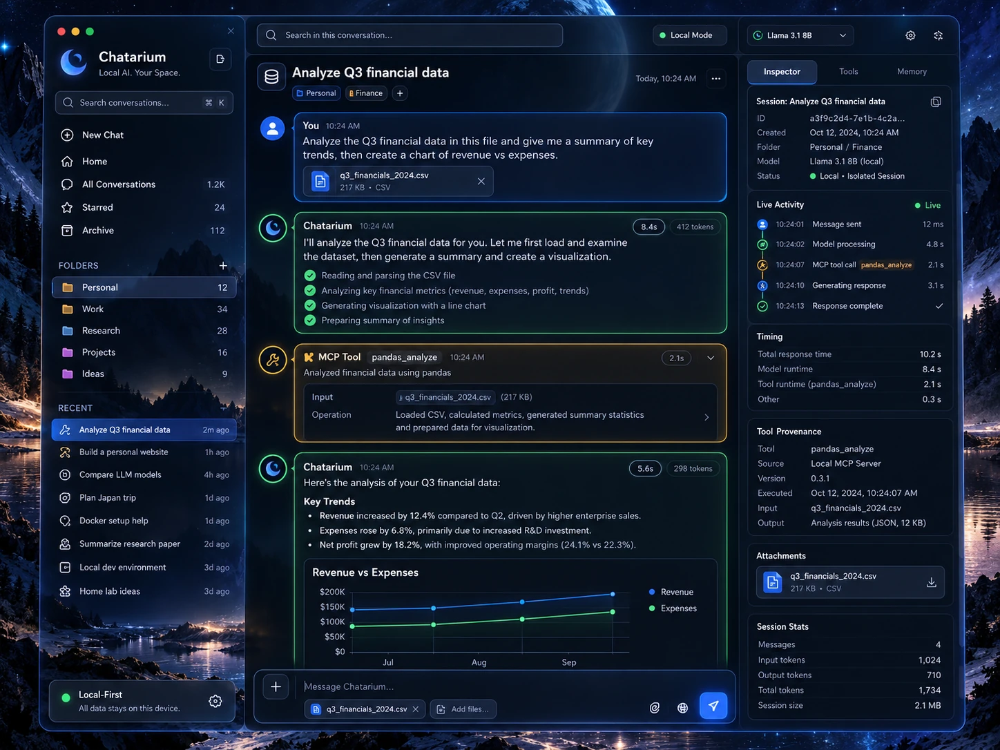

Interfaces worth imagining.
A growing archive of beautiful software: thoughtfully composed dashboards, calendars, workspaces, and interaction ideas. A visual reference for what software could feel like.
Ephemeris✦
Time, rendered beautifully. From a personal day to the world's unfolding events, a calendar reimagined as a vivid information landscape.

Starbyte✧
Games are memories worth keeping. Three distinct worlds of interface design: a celestial library, a focused player theater, and a digital preservation atelier.

Chatarium◎
Conversations with their machinery visible: distinctive human, agent and MCP output, with local history, live timing, attachments and auditable tool provenance.
Selected works.
Explore what matters in an interface: rhythm, hierarchy, color, density, and atmosphere.
Every application deserves
its own visual identity.
Designarium is a personal taste archive shared publicly: real projects and imagined projects alike. No enforced template. New explorations can belong to any software category.